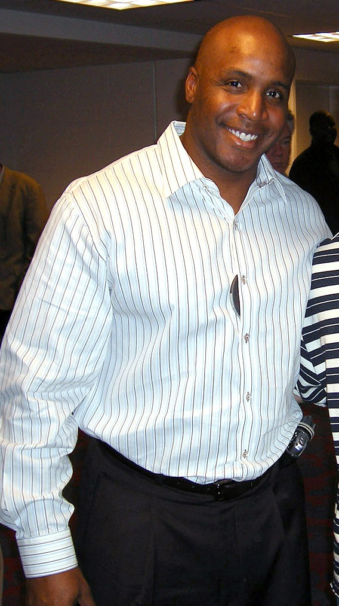
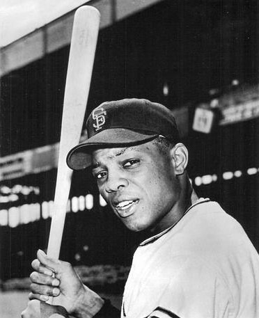

Barry Bonds and the Giants: Fifteen Years, 586 Home Runs and an Argument That Will Not End
What he actually did in San Francisco, season by season, and why the debate about him has never been the same debate as the one about how good he was.

Barry Bonds played fifteen seasons for the San Francisco Giants, from 1993 through 2007, and hit 586 of his 762 career home runs in this uniform. He won five of his seven Most Valuable Player awards here, four of them in a row. He never won a World Series here. The Giants retired his number 25 on 11 August 2018 and the Hall of Fame never let him in. Those facts sit next to each other and they're all true at once, which is more or less the whole Barry Bonds experience for anybody who watched it from a seat in this city.
What I remember isn't the swing. It's the sound the park made when he was on deck, this low hum where forty thousand people all quietly decided not to go get a beer yet. You could feel it in the concourse. Guys stopped mid order.
Nobody left early on Bonds.
My dad took me to a game in 2001 and spent most of it complaining that they'd stopped pitching to him. He was right. We watched four walks and one double off the wall and he still called it the best six dollars he ever spent on parking.
| Seasons | 1993 to 2007, fifteen years |
|---|---|
| Home runs as a Giant | 586 of his 762 career total |
| MVP awards as a Giant | Five, including four straight from 2001 to 2004 |
| Single season record | 73 home runs in 2001 |
| Career walks | 2,558, with 688 of them intentional |
| World Series | One appearance, 2002, lost in seven games |
| Number 25 | Retired by the Giants on 11 August 2018 |
Barry Bonds stats with the Giants, season by season
Every season he played in San Francisco, with his Pittsburgh years and his full career underneath. The 2005 line is fourteen games because he missed almost all of that year after knee surgery.
| Season | G | H | HR | RBI | BB | SB | AVG | OBP | SLG |
|---|---|---|---|---|---|---|---|---|---|
| 1993 | 159 | 181 | 46 | 123 | 126 | 29 | .336 | .458 | .677 |
| 1994 | 112 | 122 | 37 | 81 | 74 | 29 | .312 | .426 | .647 |
| 1995 | 144 | 149 | 33 | 104 | 120 | 31 | .294 | .431 | .577 |
| 1996 | 158 | 159 | 42 | 129 | 151 | 40 | .308 | .461 | .615 |
| 1997 | 159 | 155 | 40 | 101 | 145 | 37 | .291 | .446 | .585 |
| 1998 | 156 | 167 | 37 | 122 | 130 | 28 | .303 | .438 | .609 |
| 1999 | 102 | 93 | 34 | 83 | 73 | 15 | .262 | .389 | .617 |
| 2000 | 143 | 147 | 49 | 106 | 117 | 11 | .306 | .440 | .688 |
| 2001 | 153 | 156 | 73 | 137 | 177 | 13 | .328 | .515 | .863 |
| 2002 | 143 | 149 | 46 | 110 | 198 | 9 | .370 | .582 | .799 |
| 2003 | 130 | 133 | 45 | 90 | 148 | 7 | .341 | .529 | .749 |
| 2004 | 147 | 135 | 45 | 101 | 232 | 6 | .362 | .609 | .812 |
| 2005 | 14 | 12 | 5 | 10 | 9 | 0 | .286 | .404 | .667 |
| 2006 | 130 | 99 | 26 | 77 | 115 | 3 | .270 | .454 | .545 |
| 2007 | 126 | 94 | 28 | 66 | 132 | 5 | .276 | .480 | .565 |
| Giants, 15 seasons | 1,976 | 1,951 | 586 | 1,440 | 1,947 | 263 | .312 | ||
| Pirates, 7 seasons | 1,010 | 984 | 176 | 556 | 611 | 251 | .275 | ||
| Career | 2,986 | 2,935 | 762 | 1,996 | 2,558 | 514 | .298 | .444 | .607 |
He came home in 1993
This part gets glossed over and it shouldn't. Bonds wasn't a free agent signing who happened to land here. His father Bobby was a Giant. His godfather is Willie Mays. He grew up around this organisation, went off to Pittsburgh, won two MVPs there, and then came back after the 1992 season on what was at the time the largest contract in the history of the sport. It felt like the family getting its most famous son back, and the franchise had just been within days of moving to Florida, so it also felt like proof that the Giants were going to exist.
Then he hit forty-six home runs, drove in a hundred and twenty-three, won the MVP, and the team won a hundred and three games and missed the playoffs entirely because there was no wild card yet and Atlanta won a hundred and four. We've written about the 1993 pennant race more than once, because it remains the single most unfair thing that has happened to a team in this city.


2001, and the four years that made no sense
In 2001 he hit seventy-three home runs. The record had been sixty-one for decades before Mark McGwire pushed it to seventy, and everyone assumed that was the ceiling for a generation. Bonds went past it in a season that stopped feeling like baseball somewhere around August.
What followed was the most absurd four year stretch any hitter has ever had. Four straight MVP awards from 2001 through 2004, giving him seven for his career, which is three more than anybody else in the history of the game. In 2004 he hit .362 with a .609 on base percentage, a number that looks like a misprint, and walked two hundred and thirty-two times, a hundred and twenty of those intentionally. That isn't a statistic. That's opposing managers filing a white flag in the box score, night after night, because handing him first base was the smarter baseball decision.
By the end he had 2,558 walks and 688 intentional walks, both records that won't be approached. He's also the only player in the history of baseball with five hundred home runs and five hundred stolen bases, which is the part of his career that gets buried under the last decade of it. He was a Gold Glove left fielder eight times and a fourteen time All Star.
2002, the one that got away
The Giants reached the World Series in 2002 and Bonds was unplayable. He hit .471 with four home runs, he reached base in twenty-one of thirty plate appearances, and the Angels walked him thirteen times, seven of them intentionally, because the alternative was worse. His on base percentage for that series was .700, which remains a World Series record.
And they lost in seven. Game 6 is a wound this city has never properly dressed, a five run lead in the seventh inning of a game that would have won the franchise its first title in San Francisco, gone. Bonds did everything a hitter can do in a World Series and went home without a ring. The Giants would win three of them later, in 2010, 2012 and 2014, with him retired and watching.

The chase, 715 and 756
On 28 May 2006 he hit number 715 off Byung-hyun Kim to pass Babe Ruth. On 7 August 2007 he hit number 756 off Mike Bacsik of the Washington Nationals to pass Hank Aaron and become the all time home run king. Both happened at this ballpark, in front of this city. He played his final major league game on 26 September 2007, went nought for three, and that was it. The record still stands at 762 and nobody active is remotely close.
The other thing this ballpark gave him was the water. McCovey Cove exists as a piece of baseball vocabulary largely because of what he did to right field for a decade, and the splash hit list is still mostly his list.
The records he holds
These are major league records, regular season, and every one of them is still standing:
- Career home runs: 762. He passed Hank Aaron's 755 with number 756 on 7 August 2007.
- Single season home runs: 73, in 2001.
- Career walks: 2,558, and career intentional walks: 688.
- Single season walks: 232, and single season intentional walks: 120, both in 2004.
- Single season on base percentage: .609 in 2004, and single season slugging: .863 in 2001.
- Most MVP awards: seven, in 1990, 1992, 1993, 2001, 2002, 2003, 2004.
- The only player with 500 home runs and 500 stolen bases. He finished with 762 and 514.
Awards
- National League MVP: 1990, 1992, 1993, 2001, 2002, 2003, 2004. Five of the seven came as a Giant: 1993, 2001, 2002, 2003, 2004.
- Gold Glove: eight, 1990, 1991, 1992, 1993, 1994, 1996, 1997, 1998.
- Silver Slugger: twelve, 1990, 1991, 1992, 1993, 1994, 1996, 1997, 2000, 2001, 2002, 2003, 2004.
- All Star: fourteen times, 1990, 1992, 1993, 1994, 1995, 1996, 1997, 1998, 2000, 2001, 2002, 2003, 2004, 2007.
- Hank Aaron Award: 2001, 2002, 2004. Home Run Derby winner: 1996.
- Number 25 retired by the Giants: 2018.
For how his peak sits next to the rest of this franchise, see the three titles that came after he retired, Jeff Kent, the 2000 MVP who played alongside him and the McCovey Cove splash hits.
Statistics and awards: MLB Stats API, read 1 October 2026.
The argument
Here's the part nobody gets to dodge. Bonds is tied permanently to the steroid era, he was the central figure in the BALCO case, and the Hall of Fame voters made their statement by leaving him out across all ten years of his eligibility. That's the shadow and it isn't lifting.
What the shadow doesn't do is change what he was before any of it. He won MVPs in 1990 and 1992 in Pittsburgh as a lean, fast, brilliant defensive left fielder who stole bases. He was already a first ballot player at twenty-eight. The argument about the second half of his career is real and it's worth having honestly. The argument about whether he was the most dangerous hitter anybody in this city ever watched isn't an argument. He was. It isn't close.
What it was actually like
You didn't get up for a hot dog when his spot in the order came around. Nobody did. Forty thousand people would stop mid sentence and turn toward the plate because there was a real chance the next four seconds would be something you told people about. Pitchers refused to throw him strikes and it didn't matter. Half the ones he did get ended up in the bay.
The Giants retired 25 in 2018 with Willie Mays standing next to him. Whatever the national conversation decided about Barry Bonds, San Francisco settled its own version of it a long time ago. The rest of our Giants coverage is on the Giants hub, the other MVP in those lineups is Jeff Kent, and the wider regional record is in Bay Area sports history.
More coverage: Giants section · Bay Area Sports · Bay Area Sports Blog home